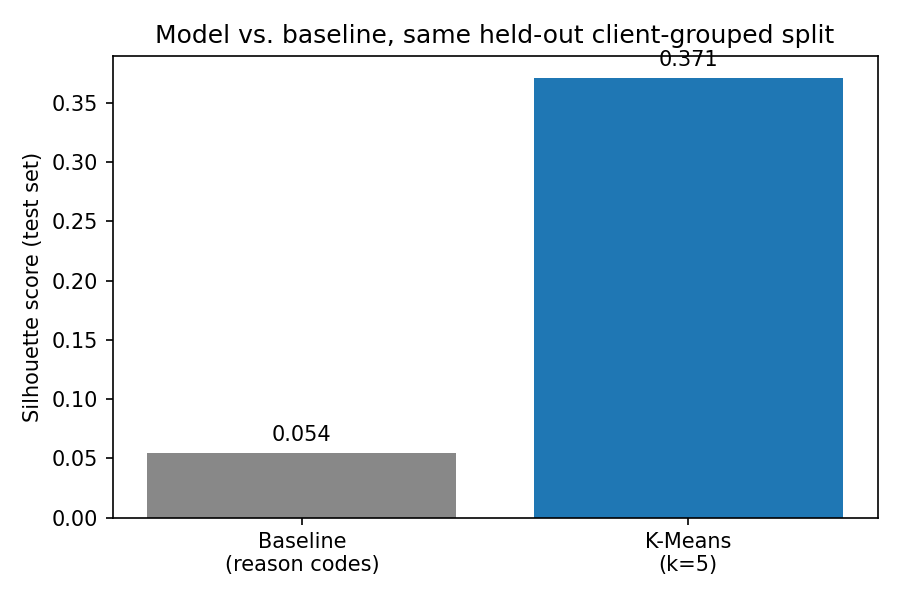
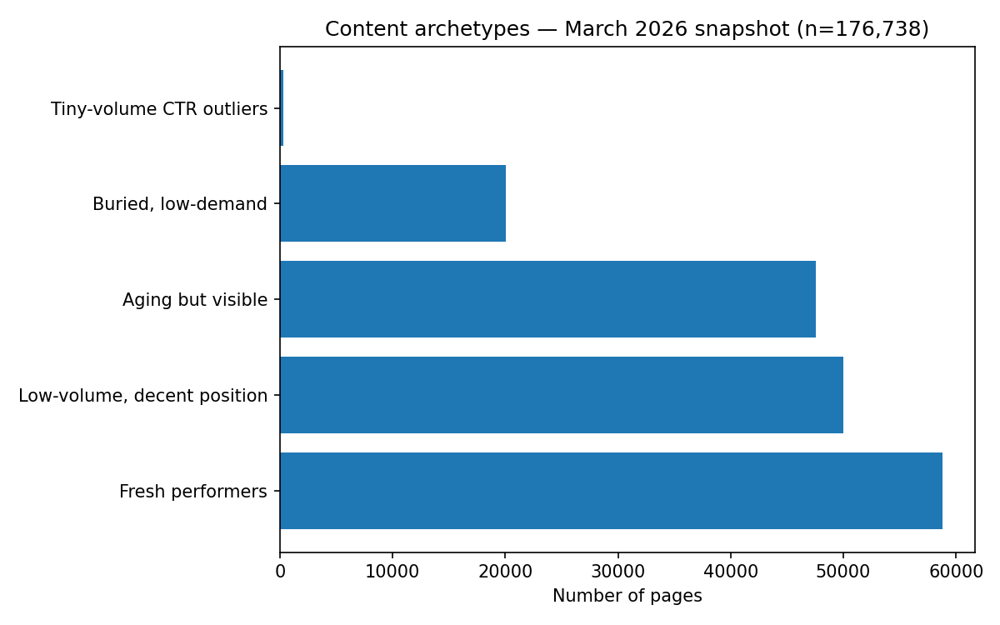

A validated content-prioritization model on 176,738 real production content items
A content team managing hundreds of thousands of pages faces a basic problem: which pages should be reviewed first in a recurring refresh cycle? FlyRank's own March 2026 research paper ran an exploratory K-Means clustering pass (k=5) on their active-content sample and produced five descriptive archetypes — but explicitly flagged them as "descriptive clusters, not production-ready personas," noting the cluster names were heuristic and sometimes duplicated. The paper's own methodology section also notes that its Random Forest feature-importance ranking is partly circular, since health score is constructed from some of the same inputs the model ranks as important.
This project picks up exactly where that appendix leaves off: can the same kind of clustering be made trustworthy enough to actually drive a content team's priority queue? That means doing the validation work the exploratory appendix didn't — a client-grouped honest split, a leakage audit, and an honest comparison against a simple rule-based alternative — on FlyRank's full internship warehouse rather than the paper's smaller active-content sample.
Source: FlyRank ML Internship Warehouse Release (hf://datasets/FlyRank/internship-warehouse,
build v20260703), accessed via a read-only, gated Hugging Face token.
Tables used: fact_content_daily_performance (report_date × client × content grain),
filtered to the month=2026-03 partition — a mid-panel month, not the sealed final-month
sample — joined against dim_content.
Date window: 2026-03-01 to 2026-03-31 (9,841,378 daily rows).
What was excluded, and why:
gsc_data_available = FALSE (63.3% of raw rows) carry zero-filled
placeholder metrics, not real zero-traffic days, and were filtered before aggregation.fact_content_daily_performance_sample table (June 2026, the panel's final month)
was never used for any label or feature logic — treated as a sealed test month.Final analysis population: 176,738 content items across 47 distinct clients.
All content and client identifiers are pseudonymous hashes provided by FlyRank — no real client names, URLs, or query strings appear anywhere in this analysis.
Assumptions: no ground-truth label exists for "should be refreshed" — this is an unsupervised problem, and archetypes are descriptive groupings, not predictions of a known outcome. A content item's March 2026 behavior is treated as representative of its current state; the method makes no claim about future trajectory. Rows without real GSC coverage are excluded rather than imputed.
Features (4): log-transformed monthly impressions, average search position, CTR, and content age in days — all StandardScaler-normalized.
Label definition: no supervised label exists. Two independent signals were compared instead: K-Means clustering (k=5, unsupervised), and a rule-based reason code (stale + visible + CTR gap) carried forward from an earlier baseline.
Baseline: the rule-based reason-code grouping — stale (age ≥ 365 days), visible (impressions ≥ 500), and CTR below half the position-tier median — used as the comparison to beat, not a ground truth.
Validation design: client-grouped 80/20 split (seed 42), chosen because content from the same client shares hidden structure a random row-level split would let the model exploit without it reflecting real generalization. Both methods were scored on the identical held-out test rows.
Leakage checks performed: no product-flags or ID columns used as features; a population-selection issue (placeholder-row inclusion) was found and corrected before these results were finalized; random-split vs. grouped-split scores were compared directly, and the small gap was explained rather than assumed to be leakage (unsupervised clustering has no label to memorize across a group boundary the way a classifier would).
Both methods evaluated on the identical held-out test set (38,428 rows, 10 clients unseen during clustering):
| Method | n_groups in test | Silhouette score |
|---|---|---|
| Baseline (reason codes) | 2 of 3 possible | 0.054 |
| K-Means (k=5) | 5 | 0.371 |

K-Means measured a higher silhouette score than the baseline on the same held-out client-grouped split.
K-Means found more internally-consistent groups on these four features than the rule-based codes. This
is a directional, decision-support signal — not proof that the clusters correspond to real,
actionable content categories, and not a claim that either method predicts future performance.
The baseline's most specific rule (stale_visible_ctr_gap) matched 0 of 176,738 items,
which partly explains its weaker score.
| Archetype | n (%) | Profile (impr / pos / CTR / age) | Action |
|---|---|---|---|
| Aging but visible | 47,548 (26.9%) | 2,631 / 12.4 / 0.26% / 317d | Refresh candidate |
| Buried, low-demand | 20,044 (11.3%) | 187 / 56.6 / 0.10% / 240d | Deprioritize |
| Fresh performers | 58,767 (33.3%) | 2,570 / 11.3 / 0.29% / 86d | Monitor only |
| Low-volume, decent position | 50,030 (28.3%) | 16 / 8.7 / 0.48% / 153d | Content-gap review |
| Tiny-volume CTR outliers | 349 (0.2%) | 2 / 7.3 / 73.5% / 207d | Excluded — artifact |

Distribution of the 176,738-item portfolio across five content archetypes.
Never automate: auto-publishing changes, auto-deleting "Buried, low-demand" pages, bulk-processing the queue without a per-client cap, treating "not flagged" (95.5% of the portfolio) as "confirmed healthy," or using this as a performance metric for content creators.
Full analysis notebooks, committed metrics, and figures are available in the project repository:
github.com/rathans48/flyrank-ml-internship-starter.
Key files: work/notebooks/capstone.ipynb (this paper's source), work/metrics/w08_paper_results.json
(headline numbers), work/notebooks/w05_model.ipynb through w07_action_playbook.ipynb
(full weekly progression). All random seeds fixed at 42.